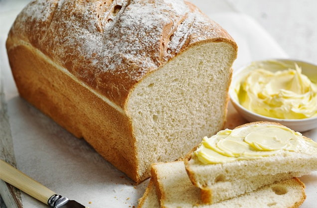

Bread Recipe

Description
Is there anything better than the aroma of freshly baked bread? Making your own loaf is so much easier than you'd think. Achieve the perfect crisp crust and light centre with our easy recipe.
Ingredients
- 500g strong white bread flour, plus extra for dusting
- 25g butter
- 1 tbsp sugar
- 7g sachet dried yeast
- Oil, for greasing
Steps
- Put the flour in a large mixing bowl and add the butter. Rub together with your fingertips until the mixture resembles fine breadcrumbs.
- Add the sugar, 1 tsp salt and the yeast. Gradually pour in 325ml warm water, mixing continuously to form a soft dough.
- Tip the dough out onto a lightly floured surface. Knead well for 10 mins, or until smooth and elastic. Return the dough to the mixing bowl and cover loosely with lightly oiled clingfilm. Leave in a warm place for about 1 hr or until doubled in size.
- Grease a 1kg loaf tin. Turn the dough out onto a lightly floured work surface and knead again. Transfer to the prepared tin and loosely cover with a fresh sheet of oiled clingfilm. Set aside in a warm place and leave to prove for about 30 mins, or until it has doubled in size again, almost filling the tin.
- Preheat the oven to gas 6, 200°C, fan 180°C. Make 3 shallow incisions across the top of the dough (this will ensure it rises evenly in the oven). Sprinkle the surface with flour and bake for 30-35 mins, until risen and golden and the base sounds hollow when tapped.